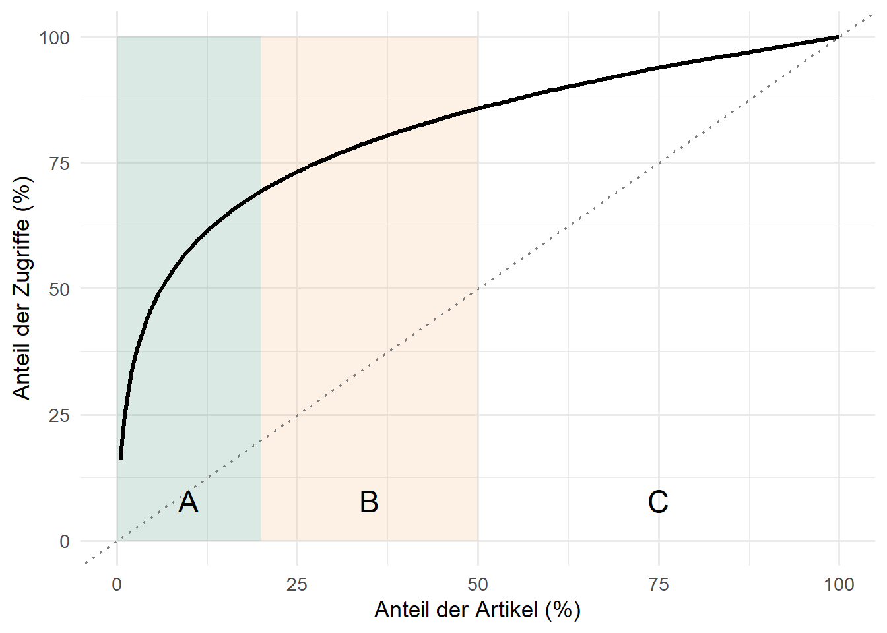
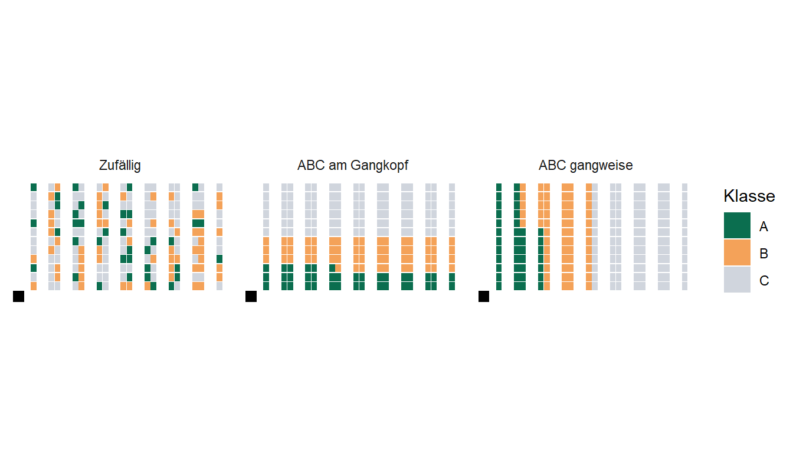
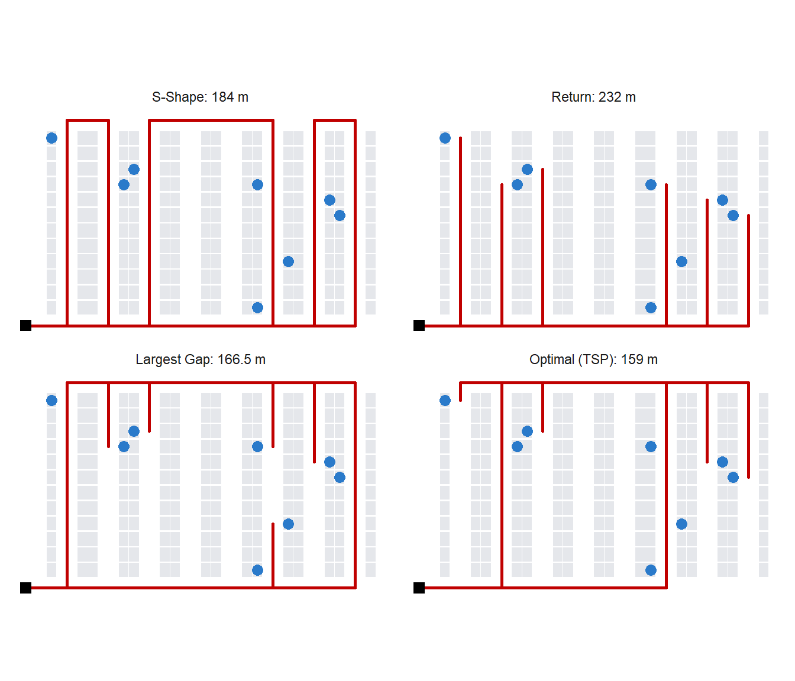
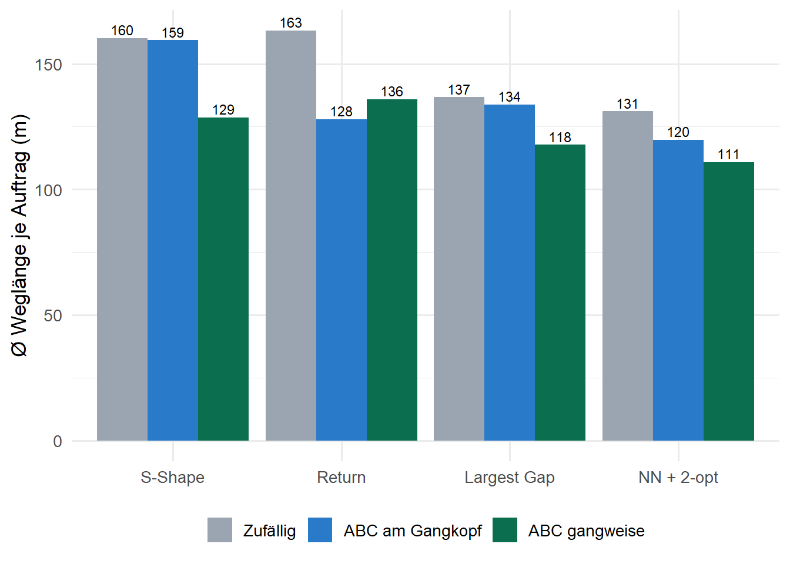

| Lagertyp | Ladeeinheit | Zugriff | Flächennutzung | geeignet für |
|---|---|---|---|---|
| Bodenlager (Block) | Paletten, Säcke | nur vordere Einheit (LIFO) | sehr hoch | wenige Artikel, große Mengen |
| Bodenlager (Zeile) | Paletten | jede Einheit | mittel | mittlere Artikelzahl |
| Palettenregal | Paletten | jede Palette | mittel | breites Sortiment, Reserve |
| Durchlaufregal | Paletten, Behälter | FIFO | hoch | Frische, Haltbarkeit |
| Fachbodenregal | Kartons, Kleinteile | jedes Fach | gering | manuelle Kommissionierung |
| Hochregallager (HRL) | Paletten | jede Palette (Regalbediengerät) | sehr hoch | hohe Durchsätze |
12 Lagerplanung und Kommissionierung
Lernziele
Nach der Bearbeitung dieses Kapitels können Sie …
- die Funktionen eines Lagers und die Prozesskette vom Wareneingang bis zum Versand beschreiben,
- statische und automatisierte Lagersysteme unterscheiden und für ein Sortiment auswählen,
- feste, chaotische und zugriffsorientierte Lagerplatzvergabe vergleichen, den Platzbedarf berechnen und Artikel mit ABC-Analyse und Cube-per-Order-Index Plätzen zuordnen,
- Kommissionierverfahren einordnen und die Kommissionierzeit eines Auftrags berechnen,
- Kommissioniertouren mit S-Shape, Return und Largest Gap bestimmen und mit der optimalen Tour vergleichen,
- das Zusammenspiel von Lagerplatzvergabe und Routing mit einer Simulationsstudie bewerten,
- Layouts mit
expand.grid()erzeugen, Szenarien systematisch durchrechnen und rekursive Funktionen schreiben.
Literatur zur Vertiefung
- Lager- und Kommissioniersysteme: (ten Hompel und Schmidt 2010); (Günther und Tempelmeier 2012).
- Kommissionierplanung im Überblick: (de Koster u. a. 2007).
- Routing und Lagerplatzvergabe: (Ratliff und Rosenthal 1983); (Hall 1993); (Petersen und Schmenner 1999).
12.1 Lager in der Supply Chain
Bislang haben wir Bestände vor allem als Mengen betrachtet: Wie viel Sicherheitsbestand ist nötig (Kapitel 9), wie viel soll produziert werden (Kapitel 10), und wie schaukeln sich Bestellungen auf (Kapitel 11)? Dieses Kapitel wendet sich dem Ort zu, an dem Bestände physisch liegen: dem Lager. Lager erfüllen in einer Supply Chain vier Grundfunktionen:
- Ausgleich: Mengen und Zeitpunkte von Zu- und Abgängen werden entkoppelt, etwa wenn in großen Losen beschafft, aber in kleinen Mengen verkauft wird, oder wenn saisonale Nachfrage aus einer gleichmäßigen Produktion bedient wird.
- Sicherung: Sicherheitsbestände schützen gegen Nachfrage- und Lieferunsicherheit.
- Sortimentsbildung: Aus sortenreinen Lieferungen vieler Lieferanten werden kundenspezifische Aufträge zusammengestellt.
- Veredelung: Ware wird gereift, konfektioniert, etikettiert oder verpackt.
Die Prozesskette eines Lagers reicht vom Wareneingang über die Einlagerung, die Lagerung und gegebenenfalls den Nachschub in einen Kommissionierbereich bis zur Kommissionierung, Verpackung und zum Versand. Häufig werden ein Reservelager (große Mengen, platzsparend, oft auf Paletten) und ein Kommissionierlager (Anbruchmengen, gut erreichbar) getrennt. Der personal- und kostenintensivste dieser Prozesse ist die Kommissionierung. Auf sie entfallen in manuellen Lagern je nach Studie rund die Hälfte bis zwei Drittel der Betriebskosten (de Koster u. a. 2007).
Fallstudie: Sushi@Home – das neue Kommissionierlager in Raunheim
SushiFresh setzt eine der Wachstumsideen aus Kapitel 5 um: den Onlineshop Sushi@Home mit Kits zum Selbermachen, Saucen, Getränken und Zubehör. Die Artikel sind haltbar und werden bundesweit per Paket verschickt. In Raunheim entsteht dafür ein Fachbodenlager mit 8 Kommissioniergängen. Jeder Gang hat zwei Regalseiten mit je 12 Fächern, also 192 Fächer für 192 Artikel. Reis-Säcke und Getränke werden auf Paletten in einem separaten Reservelager vorgehalten.
Nach dem Start kommen rund 300 Aufträge pro Tag mit durchschnittlich sieben bis acht Positionen. Die Artikel wurden eingelagert, „wo gerade Platz war“. Die Picker laufen lange Wege, und der Versand am Nachmittag wird knapp. Drei Fragen stehen im Raum: Welcher Artikel gehört auf welchen Platz? In welcher Reihenfolge sollen die Picker die Fächer anlaufen? Und wie viel bringt beides?
12.2 Lagersysteme
Die Wahl des Lagersystems hängt von der Zahl der Artikel, der Menge je Artikel, der Zugriffshäufigkeit, der Ladeeinheit, der Temperaturzone und dem Investitionsbudget ab. Für Lebensmittel ist zusätzlich die Haltbarkeit entscheidend. Ein Durchlaufregal wird von hinten befüllt und von vorne entnommen, sodass die zuerst eingelagerte Ware zuerst entnommen wird (first in, first out). Für SushiFresh passt deshalb ein Fachbodenregal für das haltbare Sortiment und ein Durchlaufregal in der Kühlzelle für kühlpflichtige Kit-Bestandteile.
Neben diesen statischen Systemen, in denen der Mensch zur Ware geht (Person-zur-Ware), gibt es automatisierte Systeme, bei denen die Ware zum Menschen kommt (Ware-zur-Person): automatische Kleinteilelager, Shuttle-Systeme, Würfelspeicher, Liftsysteme oder autonome mobile Roboter. Sie eliminieren die Wege des Pickers, erfordern aber hohe Investitionen, die sich erst bei großen und stabilen Auftragsvolumina lohnen. Für 300 Aufträge pro Tag bleibt SushiFresh bei der manuellen Kommissionierung.
12.3 Lagerplatzvergabe
12.3.1 Feste und chaotische Lagerplatzvergabe
Definition: Lagerplatzvergabe
Bei fester Lagerplatzvergabe hat jeder Artikel einen dauerhaft zugeordneten Platz. Bei chaotischer (freier) Lagerplatzvergabe wird jede Einlagerung auf einem beliebigen freien Platz vorgenommen, den ein Lagerverwaltungssystem verwaltet. Bei zonierter Vergabe ist jeder Artikelklasse eine Zone fest zugeordnet, innerhalb der Zone wird frei eingelagert.
Feste Plätze haben den Vorteil, dass Picker sie kennen und kein IT-System nötig ist. Ihr Nachteil ist der Platzbedarf: Jeder Platz muss den Maximalbestand seines Artikels aufnehmen können, auch wenn dieser Bestand nur selten erreicht wird. Bei chaotischer Lagerung zählt dagegen nur, wie viele Plätze gleichzeitig belegt sind. Mit dem Bestand \(B_i(t)\) von Artikel \(i\) zum Zeitpunkt \(t\) (in Lagerplätzen) gilt:
\[ \text{Platzbedarf}_{\text{fest}} = \sum_i \max_t B_i(t) \qquad\qquad \text{Platzbedarf}_{\text{chaotisch}} = \max_t \sum_i B_i(t) \]
Weil das Maximum einer Summe nie größer ist als die Summe der Maxima, braucht die chaotische Lagerung höchstens so viel Platz wie die feste, in der Regel deutlich weniger. Wir prüfen das für das Reservelager von SushiFresh: Zwölf Artikel werden in Bestellmengen von drei bis acht Palettenplätzen beschafft und gleichmäßig abgebaut. Die Bestellzyklen sind unterschiedlich lang und zeitlich versetzt.
Code
set.seed(11)
reserve <- tibble(
Artikel = c("Sushi-Reis 25 kg", "Nori", "Sojasauce", "Reisessig", "Ramune",
"Grüntee", "Panko", "Stäbchen", "Mirin", "Tempura-Mehl", "Miso", "Sesam"),
Q = c(8, 4, 6, 3, 5, 3, 4, 5, 6, 4, 3, 5), # Bestellmenge (Palettenplätze)
T = c(12, 7, 10, 9, 6, 14, 11, 8, 13, 5, 9, 7) # Bestellzyklus (Tage)
) |>
mutate(versatz = map_int(T, ~ sample(0:(.x - 1), 1)))
tage <- 0:59
# Sägezahn: Bestand fällt linear von Q auf 0 und wird dann wieder aufgefüllt
bestand <- sapply(seq_len(nrow(reserve)), function(i) {
with(reserve[i, ], ceiling(Q * (1 - ((tage + versatz) %% T) / T)))
})
c(fest = sum(apply(bestand, 2, max)),
chaotisch = max(rowSums(bestand)),
Mittel = round(mean(rowSums(bestand)), 1)) fest chaotisch Mittel
56 44 36 Feste Plätze erfordern 56 Palettenplätze, bei chaotischer Lagerung sind höchstens 44 gleichzeitig belegt, rund 21 % weniger. Im Mittel sind sogar nur 36 Plätze belegt. Die chaotische Lagerung muss aber die gemeinsame Spitze abdecken. Bestellen alle Artikel am selben Tag, schrumpft der Vorteil. Bei schwankender Nachfrage braucht auch sie einen Puffer.
12.3.2 Zugriffsorientierte Lagerplatzvergabe
Die Platzvergabe entscheidet nicht nur über den Flächenbedarf, sondern auch über die Wege der Picker. Artikel, die häufig gegriffen werden (Schnelldreher), sollten auf Plätzen mit kurzem Weg liegen, Langsamdreher dürfen weiter entfernt sein. Grundlage ist eine ABC-Analyse der Zugriffe. Wir simulieren dazu Zugriffszahlen für die 192 Artikel von Sushi@Home. Sie folgen, wie in vielen Sortimenten, einer stark schiefen Verteilung: Wenige Artikel werden sehr oft gegriffen, viele nur selten.
Code
n_sku <- 192
zugriffe <- round(500 * seq_len(n_sku)^(-1.0)) + 1 # Picks pro Woche, absteigend
nA <- round(0.2 * n_sku); nB <- round(0.3 * n_sku)
klasse <- c(rep("A", nA), rep("B", nB), rep("C", n_sku - nA - nB))
abc <- tibble(rang = seq_len(n_sku), zugriffe, klasse) |>
mutate(anteil_artikel = rang / n_sku,
anteil_zugriffe = cumsum(zugriffe) / sum(zugriffe))
abc |> group_by(klasse) |>
summarise(Artikel = n(), Anteil_Zugriffe = round(sum(zugriffe) / sum(abc$zugriffe), 2))# A tibble: 3 × 3
klasse Artikel Anteil_Zugriffe
<chr> <int> <dbl>
1 A 38 0.69
2 B 58 0.17
3 C 96 0.14Code
ggplot(abc, aes(x = anteil_artikel * 100, y = anteil_zugriffe * 100)) +
annotate("rect", xmin = 0, xmax = 20, ymin = 0, ymax = 100, alpha = 0.15, fill = "#0B6E4F") +
annotate("rect", xmin = 20, xmax = 50, ymin = 0, ymax = 100, alpha = 0.15, fill = "#F4A259") +
geom_line(linewidth = 1.2) +
geom_abline(linetype = "dotted", colour = "grey50") +
annotate("text", x = c(10, 35, 75), y = 8, label = c("A", "B", "C"), size = 6) +
labs(x = "Anteil der Artikel (%)", y = "Anteil der Zugriffe (%)") +
theme_minimal(base_size = 13)
Die 20 % A-Artikel vereinen rund zwei Drittel aller Picks auf sich. Wo sie liegen, bestimmt also den Großteil der Wege.
Haben die Artikel unterschiedlichen Platzbedarf, reicht die Zugriffshäufigkeit allein nicht. Ein sperriger Schnelldreher würde viele gute Plätze belegen. Heskett (1963) schlug deshalb den Cube-per-Order-Index vor:
\[\text{COI}_i = \frac{\text{Platzbedarf}_i}{\text{Zugriffe}_i}\]
Artikel werden nach aufsteigendem COI den Plätzen mit den kürzesten Wegen zugeordnet. Ein Artikel kommt also nach vorne, wenn er häufig gegriffen wird und wenig Platz braucht.
Code
coi <- tibble(
Artikel = c("Sushi-Reis 1 kg", "Nori-Blätter", "Sojasauce", "Stäbchen",
"Bambusmatte", "Reiskocher"),
Faecher = c(4, 1, 2, 1, 3, 6),
Zugriffe = c(900, 700, 800, 600, 400, 60)
) |>
mutate(COI = Faecher / Zugriffe,
Rang_Zugriffe = rank(-Zugriffe), Rang_COI = rank(COI)) |>
arrange(Rang_COI)
coi# A tibble: 6 × 6
Artikel Faecher Zugriffe COI Rang_Zugriffe Rang_COI
<chr> <dbl> <dbl> <dbl> <dbl> <dbl>
1 Nori-Blätter 1 700 0.00143 3 1
2 Stäbchen 1 600 0.00167 4 2
3 Sojasauce 2 800 0.0025 2 3
4 Sushi-Reis 1 kg 4 900 0.00444 1 4
5 Bambusmatte 3 400 0.0075 5 5
6 Reiskocher 6 60 0.1 6 6Der Sushi-Reis wird am häufigsten gegriffen, belegt aber vier Fächer und rückt nach COI auf Rang 4. Nori und Stäbchen erhalten die besten Plätze. Unter bestimmten Annahmen ist die COI-Regel optimal, etwa wenn jeder Zugriff einzeln vom Depot aus erfolgt. Holt ein Picker mehrere Positionen in einer Tour, ist sie eine Heuristik. Wie gut sie dann funktioniert, hängt vom Routing ab.
12.3.3 Das Lagerlayout von Sushi@Home
R-Exkurs: Gitter mit expand.grid() erzeugen
Ein Lagerlayout ist ein regelmäßiges Gitter aus Gängen, Regalseiten und Fachpositionen. expand.grid() erzeugt alle Kombinationen der übergebenen Vektoren als Datenrahmen: Bei 12 Tiefen, 2 Seiten und 8 Gängen entstehen \(12 \cdot 2 \cdot 8 = 192\) Zeilen, eine je Fach. Mit mutate() berechnen wir anschließend die Koordinaten. Die Gangmitten liegen alle 4 m (\(x\)), die Fächer sind 1,5 m breit (\(y\)), der vordere Quergang liegt bei \(y = 0\), der hintere bei \(y = Y = 20\) m. Das Depot (Packplatz) liegt vorne links bei \((0, 0)\).
Code
n_gang <- 8; n_tief <- 12; Y <- 20
gang_x <- 4 * seq_len(n_gang)
faecher <- expand.grid(tiefe = 1:n_tief, seite = c("L", "R"), gang = 1:n_gang,
stringsAsFactors = FALSE) |>
mutate(fach = row_number(),
x = gang_x[gang], # Position des Pickers (Gangmitte)
y = 1 + 1.5 * (tiefe - 0.5),
rx = x + ifelse(seite == "L", -1.5, 1.5)) # Position des Regalfachs
head(faecher, 3) tiefe seite gang fach x y rx
1 1 L 1 1 4 1.75 2.5
2 2 L 1 2 4 3.25 2.5
3 3 L 1 3 4 4.75 2.5Wir vergleichen drei Varianten der Lagerplatzvergabe:
- zufällig (heutiger Zustand, chaotisch),
- ABC am Gangkopf: A-Artikel vorne in allen Gängen, dahinter B, hinten C,
- ABC gangweise: A-Artikel in den ersten Gängen, dann B, dann C.
Innerhalb einer Zone werden die Artikel jeweils zufällig verteilt.
Code
set.seed(2026)
zuordnung_klasse <- function(fach_reihenfolge) {
out <- integer(n_sku) # out[Artikel] = Fach
for (k in c("A", "B", "C")) {
idx <- which(klasse == k)
out[idx] <- sample(fach_reihenfolge[idx])
}
out
}
strategien <- list(
"Zufällig" = sample(n_sku),
"ABC am Gangkopf" = zuordnung_klasse(faecher |> arrange(y, gang) |> pull(fach)),
"ABC gangweise" = zuordnung_klasse(faecher |> arrange(gang, y) |> pull(fach))
)Code
layout_df <- imap_dfr(strategien, function(zuo, name) {
tibble(fach = zuo, klasse = klasse, Strategie = name)
}) |>
left_join(faecher, by = "fach") |>
mutate(Strategie = factor(Strategie, levels = names(strategien)))
ggplot(layout_df, aes(x = rx, y = y, fill = klasse)) +
geom_tile(width = 0.95, height = 1.35) +
annotate("point", x = 0, y = 0, shape = 15, size = 3) +
scale_fill_manual(values = c(A = "#0B6E4F", B = "#F4A259", C = "#D0D5DD")) +
facet_wrap(~ Strategie) +
coord_equal() +
labs(x = NULL, y = NULL, fill = "Klasse") +
theme_minimal(base_size = 11) +
theme(axis.text = element_blank(), panel.grid = element_blank())
Beide ABC-Varianten bringen die Schnelldreher näher an das Depot, aber auf unterschiedliche Weise. Welche besser ist, hängt davon ab, wie die Picker durch das Lager laufen.
12.4 Kommissionierung
Definition: Kommissionierung
Kommissionieren ist das Zusammenstellen von Teilmengen aus einem Sortiment nach einem Auftrag. Ein Auftrag besteht aus Positionen (Auftragszeilen, also ein Artikel in einer bestimmten Menge). Ein Pick ist ein einzelner Greifvorgang. Die Kommissionierleistung wird in Positionen oder Aufträgen pro Stunde gemessen.
Kommissioniersysteme lassen sich nach mehreren Merkmalen gestalten:
- Bereitstellung: Person-zur-Ware (statisch) oder Ware-zur-Person (dynamisch),
- Auftragsbearbeitung: einstufig und auftragsweise (ein Auftrag je Tour) oder zweistufig und serienweise (mehrere Aufträge je Tour, danach Sortieren),
- Zonen: ein Picker für das ganze Lager oder mehrere Zonen, in denen Aufträge weitergegeben oder parallel bearbeitet und zusammengeführt werden,
- Informationsbereitstellung: Papier-Pickliste, Scanner, Pick-by-Voice, Pick-by-Light oder Datenbrille.
Die Zeit für einen Auftrag setzt sich zusammen aus einer Basiszeit \(t_{\text{Basis}}\) (Auftrag annehmen, Behälter holen, abgeben), der Wegzeit (Weglänge \(w\) geteilt durch Gehgeschwindigkeit \(v\)) und einer Zeit je Position \(t_{\text{Pos}}\) für Suchen, Greifen und Bestätigen:
\[t = t_{\text{Basis}} + \frac{w}{v} + n \cdot t_{\text{Pos}}\]
In der typischen Zeitaufteilung eines Pickers entfällt rund die Hälfte auf das Gehen, der Rest verteilt sich auf Suchen, Greifen, Rüsten und Sonstiges (de Koster u. a. 2007). Die Weglänge ist deshalb der größte Hebel. Sie hängt von zwei Entscheidungen ab: der Lagerplatzvergabe (wo liegen die Artikel?) und dem Routing (in welcher Reihenfolge werden sie angelaufen?).
12.5 Picker Routing
12.5.1 Problemstellung
Gegeben ist eine Pickliste mit \(n\) Positionen. Gesucht ist die kürzeste Rundtour vom Depot zu allen Pickpositionen und zurück. Das ist ein Rundreiseproblem (Traveling Salesman Problem, TSP) auf einem speziellen Graphen aus Gängen und Quergängen. Allgemein behandeln wir das TSP in Kapitel 15. Im hier betrachteten Ein-Block-Layout mit parallelen Gängen und je einem Quergang vorne und hinten berechnet sich die Wegdistanz zwischen zwei Pickpositionen \((x_1, y_1)\) und \((x_2, y_2)\) so:
\[ d = \begin{cases} |y_1 - y_2| & \text{gleicher Gang} \\ |x_1 - x_2| + \min\big(y_1 + y_2,\; 2Y - y_1 - y_2\big) & \text{verschiedene Gänge} \end{cases} \]
Liegen die Positionen in verschiedenen Gängen, muss der Picker über den vorderen oder den hinteren Quergang wechseln und wählt den kürzeren Umweg.
Für dieses Layout gibt es ein effizientes exaktes Verfahren auf Basis dynamischer Programmierung (Ratliff und Rosenthal 1983). In der Praxis werden aber häufig einfache Routingstrategien eingesetzt. Picker folgen lieber leicht merkbaren Mustern, und optimale Touren wirken oft unlogisch, werden nicht eingehalten und führen in engen Gängen zu Staus. Wir betrachten drei Strategien und vergleichen sie mit dem Optimum. Alle drei Funktionen geben Wegpunkte zurück, aus denen sich Weglänge und Grafik ergeben.
12.5.2 S-Shape, Return und Largest Gap
S-Shape (auch Traversal): Jeder Gang mit mindestens einem Pick wird vollständig durchlaufen, abwechselnd nach hinten und nach vorne. Ist die Zahl der Gänge ungerade, wird der letzte Gang nur bis zum hintersten Pick betreten.
Code
route_sshape <- function(pk) {
g <- sort(unique(pk$gang)); m <- length(g)
wp <- list(c(0, 0)); vorne <- TRUE
for (k in seq_len(m)) {
x <- gang_x[g[k]]; ys <- pk$y[pk$gang == g[k]]
if (k == m && m %% 2 == 1) { # letzter Gang bei ungerader Zahl
wp <- c(wp, list(c(x, 0), c(x, max(ys)), c(x, 0)))
} else if (vorne) { # nach hinten durchlaufen
wp <- c(wp, list(c(x, 0), c(x, Y))); vorne <- FALSE
} else { # nach vorne durchlaufen
wp <- c(wp, list(c(x, Y), c(x, 0))); vorne <- TRUE
}
}
do.call(rbind, c(wp, list(c(0, 0))))
}Return: Jeder Gang mit Picks wird vom vorderen Quergang betreten. Der Picker geht bis zum hintersten Pick und kehrt um.
Largest Gap (Hall 1993): Der erste und der letzte Gang mit Picks werden vollständig durchlaufen. In den Gängen dazwischen wird die größte Lücke bestimmt, entweder zwischen benachbarten Picks oder zwischen einem Pick und einem Quergang. Picks vor der Lücke werden vom vorderen, Picks dahinter vom hinteren Quergang aus geholt. Die größte Lücke wird also nie gelaufen.
Code
route_lgap <- function(pk) {
g <- sort(unique(pk$gang)); m <- length(g)
if (m == 1) return(route_return(pk))
wp <- list(c(0, 0), c(gang_x[g[1]], 0), c(gang_x[g[1]], Y)) # 1. Gang ganz
vorne_max <- c(); mitte <- if (m > 2) g[2:(m - 1)] else integer(0)
for (j in mitte) { # hinten entlang
pts <- c(0, sort(pk$y[pk$gang == j]), Y); k <- which.max(diff(pts))
x <- gang_x[j]; wp <- c(wp, list(c(x, Y)))
if (pts[k + 1] < Y) wp <- c(wp, list(c(x, pts[k + 1]), c(x, Y)))
vorne_max[as.character(j)] <- pts[k]
}
xl <- gang_x[g[m]]; wp <- c(wp, list(c(xl, Y), c(xl, 0))) # letzter Gang ganz
for (j in rev(mitte)) { # vorne zurück
x <- gang_x[j]; fm <- vorne_max[as.character(j)]
wp <- c(wp, list(c(x, 0)))
if (fm > 0) wp <- c(wp, list(c(x, fm), c(x, 0)))
}
do.call(rbind, c(wp, list(c(0, 0))))
}12.5.3 Die optimale Tour
Für kleine Aufträge lässt sich die optimale Reihenfolge durch vollständige Enumeration finden: Man prüft alle Reihenfolgen der Pickpositionen und wählt die kürzeste. Bei acht Positionen sind das \(8! = 40.320\) Reihenfolgen, für einen Rechner kein Problem.
R-Exkurs: Rekursive Funktionen
Eine rekursive Funktion ruft sich selbst auf. Das ist elegant, wenn sich ein Problem auf eine kleinere Version desselben Problems zurückführen lässt. Alle Permutationen eines Vektors erhält man so: Wähle nacheinander jedes Element als erstes und hänge daran alle Permutationen der übrigen Elemente. Die Rekursion endet bei einem Vektor der Länge 1, dessen einzige Permutation er selbst ist. Ohne eine solche Abbruchbedingung würde sich die Funktion endlos selbst aufrufen.
Code
[[1]]
[1] 1 2 3
[[2]]
[1] 1 3 2
[[3]]
[1] 2 1 3
[[4]]
[1] 2 3 1
[[5]]
[1] 3 1 2
[[6]]
[1] 3 2 1Die Zahl der Permutationen wächst mit \(n!\) sehr schnell. Für zehn Positionen wären es bereits über 3,6 Millionen. Kapitel 15 zeigt Heuristiken, die auch große Probleme schnell lösen.
Code
dist_matrix <- function(pk) {
P <- rbind(c(0, 0), as.matrix(pk[, c("x", "y")])); n <- nrow(P)
D <- matrix(0, n, n)
for (i in 1:n) for (j in 1:n) D[i, j] <- dist_lager(P[i, ], P[j, ])
list(P = P, D = D)
}
tour_len <- function(t, D) sum(D[cbind(t, c(t[-1], t[1]))])
# Wegpunkte einer Tour: Gangwechsel über den kürzeren Quergang
tour_wp <- function(t, P) {
tt <- c(t, t[1]); wp <- list(P[tt[1], ])
for (k in 2:length(tt)) {
p <- P[tt[k - 1], ]; q <- P[tt[k], ]
if (p[1] != q[1]) {
yy <- if (p[2] + q[2] <= 2 * Y - p[2] - q[2]) 0 else Y
wp <- c(wp, list(c(p[1], yy), c(q[1], yy)))
}
wp <- c(wp, list(q))
}
do.call(rbind, wp)
}12.5.4 Beispielauftrag
Ein „Starter-Kit“ von Sushi@Home umfasst acht Positionen. Bei der heutigen zufälligen Lagerplatzvergabe liegen sie wie folgt:
Code
namen <- c("Sushi-Reis 1 kg", "Sojasauce", "Stäbchen", "Bambusmatte",
"Sriracha", "Sushi-Bazooka", "Reis-Messbecher", "Sojaschälchen")
bsp_sku <- c(1, 3, 7, 12, 25, 48, 90, 150)
bsp <- faecher[strategien[["Zufällig"]][bsp_sku], ] |>
mutate(Nr = seq_along(bsp_sku), Artikel = namen, Klasse = klasse[bsp_sku])
bsp |> select(Nr, Artikel, Klasse, gang, seite, tiefe) Nr Artikel Klasse gang seite tiefe
121 1 Sushi-Reis 1 kg A 6 L 1
45 2 Sojasauce A 2 R 9
164 3 Stäbchen A 7 R 8
58 4 Bambusmatte A 3 L 10
12 5 Sriracha A 1 L 12
136 6 Sushi-Bazooka B 6 R 4
175 7 Reis-Messbecher B 8 L 7
129 8 Sojaschälchen C 6 L 9Code
dm <- dist_matrix(bsp)
alle <- perms(2:nrow(dm$D))
laengen <- sapply(alle, function(p) tour_len(c(1, p), dm$D))
opt_tour <- c(1, alle[[which.min(laengen)]])
routen <- list(
"S-Shape" = route_sshape(bsp),
"Return" = route_return(bsp),
"Largest Gap" = route_lgap(bsp),
"Optimal (TSP)" = tour_wp(opt_tour, dm$P)
)
sapply(routen, weg_laenge) S-Shape Return Largest Gap Optimal (TSP)
184.0 232.0 166.5 159.0 Code
routen_df <- imap_dfr(routen, ~ tibble(x = .x[, 1], y = .x[, 2], Strategie = .y,
schritt = seq_len(nrow(.x)))) |>
mutate(Strategie = factor(paste0(Strategie, ": ",
sapply(routen, weg_laenge)[Strategie], " m"),
levels = paste0(names(routen), ": ",
sapply(routen, weg_laenge), " m")))
ggplot() +
geom_tile(data = faecher, aes(x = rx, y = y), width = 0.95, height = 1.35,
fill = "#E5E7EB") +
geom_path(data = routen_df, aes(x = x, y = y), colour = "#C00000", linewidth = 0.9) +
geom_point(data = bsp, aes(x = rx, y = y), colour = "#2A7ACA", size = 3) +
annotate("point", x = 0, y = 0, shape = 15, size = 3) +
facet_wrap(~ Strategie, ncol = 2) +
coord_equal() +
labs(x = NULL, y = NULL) +
theme_minimal(base_size = 11) +
theme(axis.text = element_blank(), panel.grid = element_blank())
Im Beispiel ist Return am schlechtesten: Einige Picks liegen tief in den Gängen, und jeder Meter wird doppelt gelaufen. S-Shape durchläuft auch Gänge vollständig, in denen nur ein Artikel weit vorne liegt. Largest Gap vermeidet beides und liegt nur wenige Prozent über der optimalen Tour. Die optimale Tour kombiniert Elemente aller Strategien: Manche Gänge werden durchlaufen, andere von vorne oder von hinten angelaufen.
12.6 Lagerplatzvergabe und Routing gemeinsam bewerten
Ein einzelner Auftrag ist kein verlässlicher Maßstab. Um Strategien zu bewerten, simulieren wir 300 typische Aufträge mit fünf bis zehn Positionen, deren Artikel gemäß ihrer Zugriffshäufigkeit gezogen werden, und berechnen für jede Kombination aus Lagerplatzvergabe und Routing die mittlere Weglänge. Als Referenz nahe am Optimum dient eine TSP-Heuristik aus Kapitel 15 (Nearest Neighbor mit 2-opt-Verbesserung).
R-Exkurs: Szenarien systematisch durchrechnen
Eine Simulationsstudie hat zwei Dimensionen: die Szenarien (hier drei Lagerplatzvergaben) und die Stichprobe (300 Aufträge). Das bewährte Muster: Die Stichprobe wird einmal mit festem set.seed() erzeugt und für alle Szenarien wiederverwendet. So beruhen Unterschiede zwischen den Szenarien nur auf der Strategie und nicht auf Zufall (common random numbers). Mit sample(..., prob = zugriffe) werden Artikel proportional zu ihrer Zugriffshäufigkeit gezogen. imap_dfr() aus purrr iteriert über die benannte Liste der Strategien, übergibt Element und Namen an die Funktion und fügt die Ergebnistabellen zeilenweise zusammen.
Code
# TSP-Heuristik (Nearest Neighbor + 2-opt) als Referenz, vgl. Kapitel Tourenplanung
nn_tour <- function(D) {
t <- 1
while (length(t) < nrow(D)) {
o <- setdiff(seq_len(nrow(D)), t); t <- c(t, o[which.min(D[tail(t, 1), o])])
}
t
}
two_opt <- function(t, D) {
n <- length(t)
repeat {
best <- 0
for (i in 1:(n - 1)) for (k in (i + 1):n) {
a <- t[i]; b <- t[i + 1]; c <- t[k]; d <- t[k %% n + 1]
if (b == c || a == d) next
dl <- D[a, b] + D[c, d] - D[a, c] - D[b, d]
if (dl > best + 1e-9) { best <- dl; bi <- i; bk <- k }
}
if (best <= 0) break
t <- c(t[1:bi], rev(t[(bi + 1):bk]), if (bk < n) t[(bk + 1):n])
}
t
}
set.seed(2026)
auftraege <- replicate(300, sample(n_sku, sample(5:10, 1), prob = zugriffe),
simplify = FALSE)
sim <- imap_dfr(strategien, function(zuo, name) {
d <- sapply(auftraege, function(o) {
pk <- faecher[zuo[o], ]; dmx <- dist_matrix(pk)
c("S-Shape" = weg_laenge(route_sshape(pk)),
"Return" = weg_laenge(route_return(pk)),
"Largest Gap" = weg_laenge(route_lgap(pk)),
"NN + 2-opt" = tour_len(two_opt(nn_tour(dmx$D), dmx$D), dmx$D))
})
tibble(Strategie = name, Routing = rownames(d), Weg = rowMeans(d))
})Code
sim |>
mutate(Routing = factor(Routing, levels = c("S-Shape", "Return", "Largest Gap", "NN + 2-opt")),
Strategie = factor(Strategie, levels = names(strategien))) |>
ggplot(aes(x = Routing, y = Weg, fill = Strategie)) +
geom_col(position = "dodge") +
geom_text(aes(label = round(Weg)), position = position_dodge(0.9), vjust = -0.3, size = 3.2) +
scale_fill_manual(values = c("#9AA5B1", "#2A7ACA", "#0B6E4F")) +
labs(x = NULL, y = "Ø Weglänge je Auftrag (m)", fill = NULL) +
theme_minimal(base_size = 13) +
theme(legend.position = "bottom")
Die Simulation bestätigt einen bekannten Befund der Literatur (Petersen und Schmenner 1999): Welche Lagerplatzvergabe am besten ist, hängt vom Routing ab. Bei S-Shape zahlt sich die gangweise Zonierung aus, denn liegen die Schnelldreher in wenigen Gängen, müssen nur wenige Gänge durchlaufen werden. Bei Return ist dagegen die Zonierung am Gangkopf überlegen, denn liegen die Schnelldreher vorne, bleiben die Stichwege kurz. Die falsche Kombination verschenkt einen Großteil des Potenzials. Lagerplatzvergabe und Routing müssen deshalb gemeinsam geplant werden.
12.6.1 Was bringt das für SushiFresh?
Mit der Formel für die Kommissionierzeit lässt sich der Personalbedarf abschätzen. Wir nehmen eine Gehgeschwindigkeit mit Wagen von 0,8 m/s, eine Basiszeit von 60 s und 10 s je Position an.
Code
v <- 0.8; t_basis <- 60; t_pos <- 10; pos_mittel <- mean(lengths(auftraege))
w <- function(s, r) sim$Weg[sim$Strategie == s & sim$Routing == r]
leistung <- tibble(
Szenario = c("Heute: zufällig + S-Shape", "ABC gangweise + S-Shape",
"ABC gangweise + Largest Gap"),
Weg = c(w("Zufällig", "S-Shape"), w("ABC gangweise", "S-Shape"),
w("ABC gangweise", "Largest Gap"))
) |>
mutate(Zeit_s = t_basis + Weg / v + pos_mittel * t_pos,
Anteil_Weg = (Weg / v) / Zeit_s,
Pickerstunden_Tag = 300 * Zeit_s / 3600)
leistung |> mutate(across(where(is.numeric), ~ round(.x, 2)))# A tibble: 3 × 5
Szenario Weg Zeit_s Anteil_Weg Pickerstunden_Tag
<chr> <dbl> <dbl> <dbl> <dbl>
1 Heute: zufällig + S-Shape 160. 335. 0.6 27.9
2 ABC gangweise + S-Shape 129. 296. 0.54 24.6
3 ABC gangweise + Largest Gap 118. 282. 0.52 23.5Allein durch Umlagern der Artikel und eine feste Laufregel sinkt der Personalbedarf von 27,9 auf 23,5 Picker-Stunden pro Tag, ohne Investition in Technik. Die Umsetzung erfordert eine einmalige Umlagerung und eine regelmäßige Überprüfung der Klassen, denn Saisonartikel wandern im Zeitverlauf zwischen A, B und C.
12.6.2 Sammelkommissionierung
Eine weitere Möglichkeit, Wege zu sparen, ist die Sammelkommissionierung (Batching): Ein Picker holt die Positionen mehrerer Aufträge in einer Tour, etwa mit einem Wagen mit mehreren Kisten. Danach wird nach Aufträgen getrennt, direkt am Wagen (pick and sort) oder in einem zweiten Schritt.
Code
Auftrag_1 Auftrag_2 gemeinsam
138 122 169 Die gemeinsame Tour ist deutlich kürzer als die Summe der Einzeltouren, weil sich die Gänge der beiden Aufträge überlappen. Dafür entsteht Sortieraufwand, und das Fehlerrisiko steigt. Welche Aufträge zu einem Batch zusammengefasst werden sollten, ist selbst ein Optimierungsproblem. Eine naheliegende Heuristik kombiniert Aufträge mit möglichst ähnlichen Gängen, ähnlich wie das Savings-Verfahren in Kapitel 15 Kunden zu Touren verbindet.
12.7 Zusammenfassung
Lager gleichen aus, sichern ab und bilden Sortimente. Der Lagertyp richtet sich nach Ladeeinheit, Artikelzahl, Zugriffshäufigkeit und Haltbarkeit. Chaotische Lagerplatzvergabe spart Fläche, weil nur die gemeinsame Bestandsspitze und nicht die Summe der Einzelmaxima vorgehalten werden muss. Zugriffsorientierte Vergabe nach ABC-Klassen oder Cube-per-Order-Index spart Wege. Die Kommissionierung ist der teuerste Lagerprozess, und rund die Hälfte der Zeit ist Wegzeit. Picker Routing ist ein TSP im Lager. Einfache Strategien wie S-Shape, Return und Largest Gap sind praxistauglich und liegen oft nahe am Optimum. Entscheidend ist, dass Lagerplatzvergabe und Routing zusammenpassen.
Auf der R-Seite haben Sie Gitter mit expand.grid() erzeugt, Layouts mit geom_tile() und facet_wrap() visualisiert, eine rekursive Funktion zur Enumeration geschrieben und eine Simulationsstudie mit gemeinsamer Stichprobe und imap_dfr() aufgebaut.
Kontrollfragen
- Nennen Sie die vier Grundfunktionen eines Lagers und je ein Beispiel aus dem Sushi@Home-Lager.
- Warum benötigt die chaotische Lagerplatzvergabe höchstens so viel Platz wie die feste? Unter welchen Bedingungen ist der Vorteil gering?
- Berechnen Sie den COI für einen Artikel mit 2 Fächern und 250 Zugriffen pro Woche. Auf welchen Rang käme er in der Tabelle des Kapitels?
- Beschreiben Sie die Routingstrategien S-Shape, Return und Largest Gap. In welcher Situation ist Return besser als S-Shape?
- Ein Auftrag hat sechs Positionen in den Gängen 1, 2, 2, 4, 5 und 7 mit den Tiefen 4, 3, 17, 16, 10 und 2 m. Bestimmen Sie die Weglängen der drei Strategien von Hand (Gangabstand 4 m, Depot 4 m vor Gang 1, hinterer Quergang bei 20 m) und prüfen Sie das Ergebnis mit den R-Funktionen.
- Erklären Sie, warum eine gangweise ABC-Zonierung zu S-Shape, eine Zonierung am Gangkopf dagegen zu Return passt.
- Was versteht man unter common random numbers, und warum ist das Verfahren bei Simulationsvergleichen sinnvoll?
- Welche Vor- und Nachteile hat die Sammelkommissionierung gegenüber der auftragsweisen Kommissionierung?